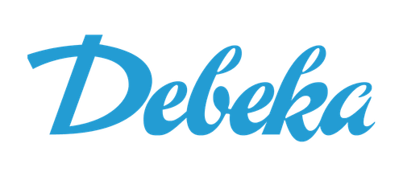
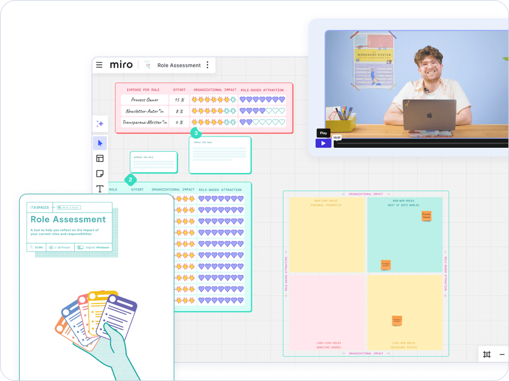
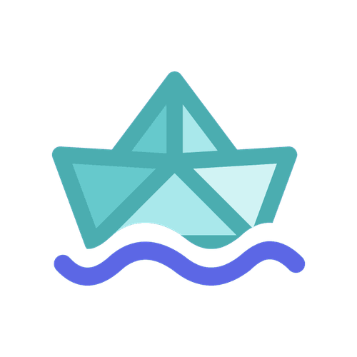
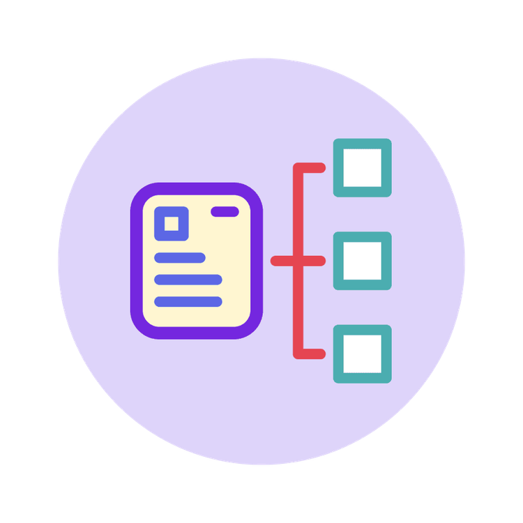
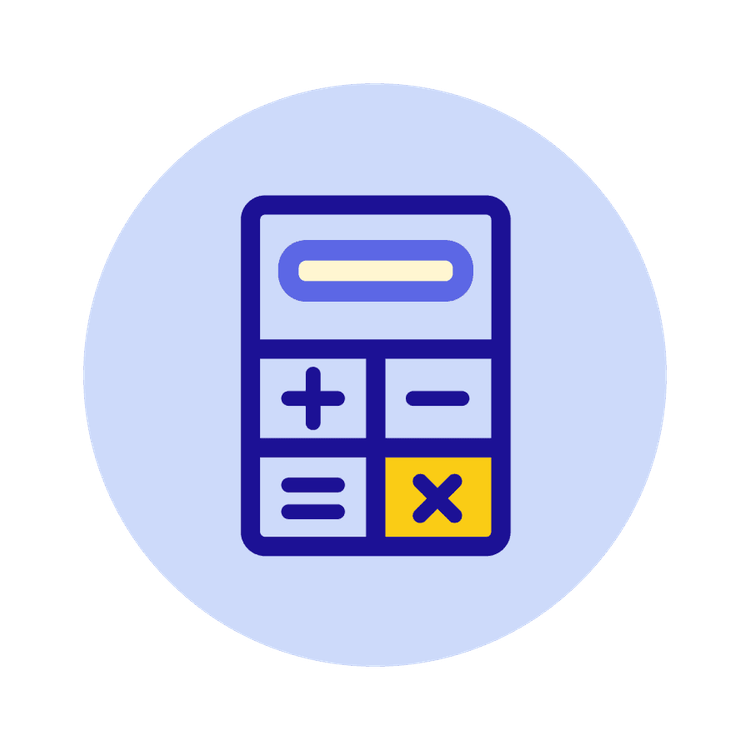
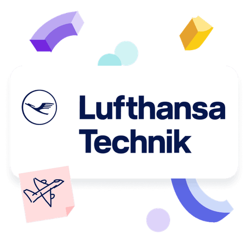
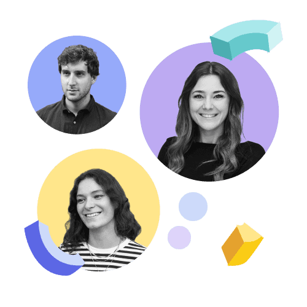

Business
5+ seats
Access for multiple team members within a tailored plan
9 Spaces is the 360° solution for learning organisations. Scale transformation knowledge into your teams and build a culture of learning and development.

On this page, you’ll learn how team development finally becomes effective, even without much time, budget, or capacity.

Increase impact, improve structures, and simply work well together. On 9 Spaces, you’ll find more field-tested workshop formats: explained so that anyone can run them with less than one hour of preparation. Drive new work transformation in your organisation.

We believe transformation starts from within, and we help you bring it to life in your organisation.

Give leaders and their teams the tools to take ownership of their own development. Make transformation scalable by getting lots of small (team) boats moving.

With 9 Spaces, you get a comprehensive library of proven methods that you can integrate into your existing learning & development infrastructure. Upload our tools to your LMS, share them via SharePoint, or send them by email. Spark momentum.

Stay in control of account management. As HR, you centrally decide who gets access to the workshop platform. Only you can add seats.

Many of Lufthansa Technik’s 4,500 employees were stuck in workdays shaped by endless meetings. With support from 9 Spaces, an internal facilitator community gradually built a more conscious and effective meeting culture.
Access for multiple team members within a tailored plan

Let’s talk about how your team or organisation can unlock the full potential of 9 Spaces with real examples from other organisations.